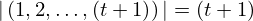
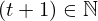

Show the Proof¶
In [1]:
import proveit
# Automation is not needed when only showing a stored proof:
proveit.defaults.automation = False # This will speed things up.
proveit.defaults.inline_pngs = False # Makes files smaller.
%show_proof
Out[1]:
| step type | requirements | statement | ||
|---|---|---|---|---|
| 0 | instantiation | 1, 2 |  ⊢ ⊢  | |
 : , : ,  : :  | ||||
| 1 | theorem | ⊢  | ||
| proveit.logic.equality.equals_reversal | ||||
| 2 | instantiation | 3, 4 | ⊢  | |
 : , : ,  : :  | ||||
| 3 | theorem | ⊢  | ||
| proveit.core_expr_types.tuples.range_from1_len | ||||
| 4 | instantiation | 5, 6, 7 | ⊢  | |
 : :  , ,  : :  , : , : | ||||
| 5 | theorem | ⊢  | ||
| proveit.logic.sets.inclusion.superset_membership_from_proper_subset | ||||
| 6 | theorem | ⊢  | ||
| proveit.numbers.number_sets.natural_numbers.nat_pos_within_nat | ||||
| 7 | instantiation | 8, 9, 10 | ⊢  | |
 : :  , ,  : :  | ||||
| 8 | theorem | ⊢  | ||
| proveit.numbers.addition.add_nat_pos_closure_bin | ||||
| 9 | assumption | ⊢ | ||
| 10 | theorem | ⊢  | ||
| proveit.numbers.numerals.decimals.posnat1 | ||||